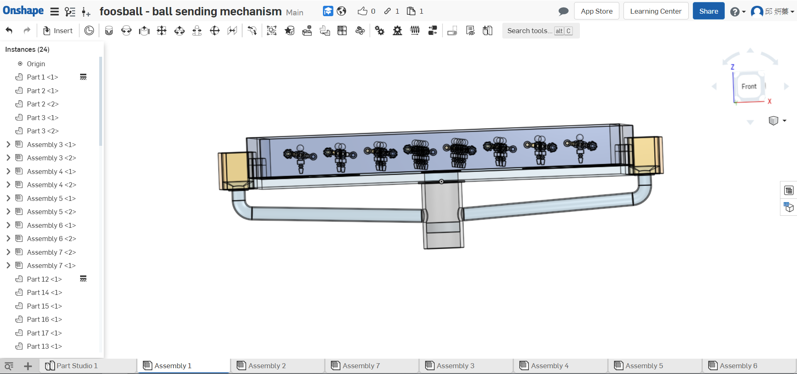
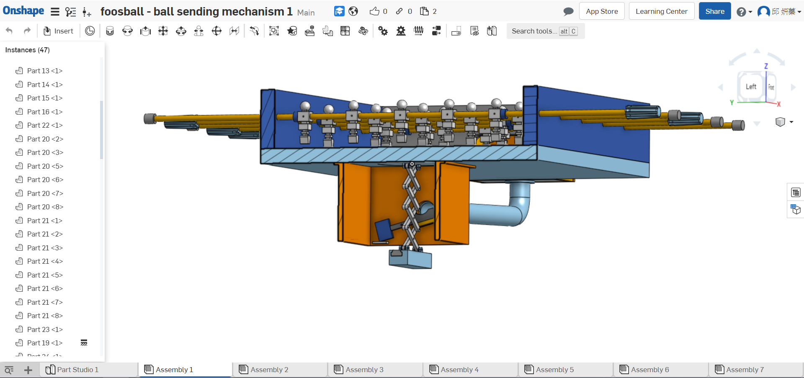
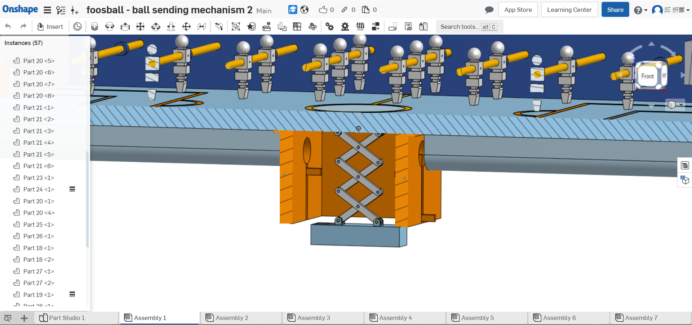
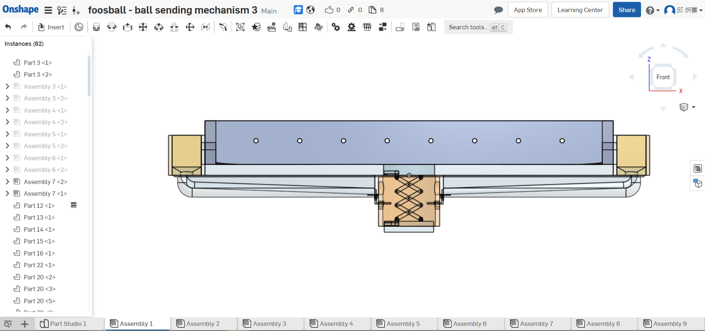
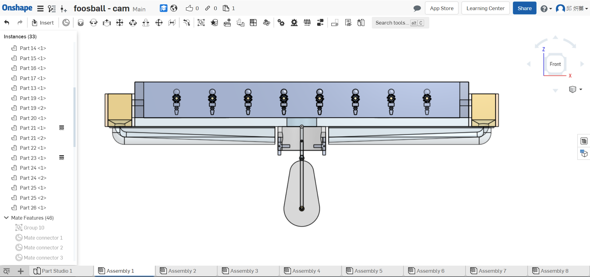

2019 Collaborative Product Design Internship BG1
Home
Site Map
reveal
blog
各組期末報告說明
執行規劃
手足球系統模擬
設計與繪圖
零組件尺寸分析
參數設計與繪圖
細部設計與 BOM
V-rep 動態模擬
送球機構設計與模擬
系統功能展示
結案報告
專案口頭簡報
專案報告書
Mid-term Report
Introduction
Onshape
Process
Complete
V-rep Tutorial
BubbleRob
V-rep Table Football
Left player
Progress
03
06
11
12
16
21
22
28
33
40
45
Experience
40623203
40623206
40623211
40623212
40623216
40623221
40623222
40623228
40623233
40623240
40623245
Attend
V-rep 動態模擬 <<
Previous
Next
>> 系統功能展示
送球機構設計與模擬
初步設計送球

送球機構設計(First)

送球機構設計(Second)

送球機構第一版

送球機構第二版

送球機構設計說明
送球機構第一版模擬
V-rep 動態模擬 <<
Previous
Next
>> 系統功能展示